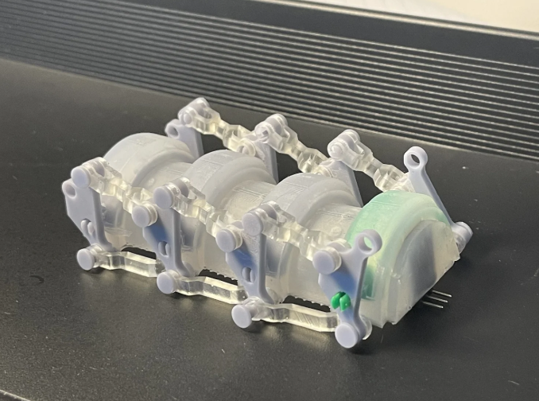

IEEE International Conference on Robotics and Automation (ICRA) · 2026

Visual-Auditory Proprioception of Soft Finger Shape and Contact
DeepCoFi is a lightweight multimodal proprioception framework that fuses internal camera images with acoustic spectrograms to jointly recover soft-finger geometry and contact. Its two-stage FoldingNet decoder first reconstructs global bending and then refines localized contact deformations.